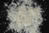

|
|
(For further information on spectroscopy, see:
http://speclab.cr.usgs.gov)
TITLE: Muscovite GDS107 DESCRIPT
DOCUMENTATION_FORMAT: MINERAL
SAMPLE_ID: GDS107
MINERAL_TYPE: Phyllosilicate
MINERAL: Muscovite (Mica group)
FORMULA: KAl2Si3O10(OH)2
FORMULA_HTML: KAl2Si3O10(OH)2
COLLECTION_LOCALITY: Mt. Turner, Australia
ORIGINAL_DONOR: Jim Crowley, USGS Reston
CURRENT_SAMPLE_LOCATION: USGS Denver Spectroscopy Laboratory
ULTIMATE_SAMPLE_LOCATION: USGS Denver Spectroscopy Laboratory
SAMPLE_DESCRIPTION:
IMAGE_OF_SAMPLE:

END_SAMPLE_DESCRIPTION.
XRD_ANALYSIS:
40 kV - 30 mA, 6.5-9.5 keV
File: muscv107.mdi (smear on quartz plate)
References: Huebner's reference patterns; Bailey (1988); JCPDS
#06-0263
Found: Dioctahedral 2M1 mica (probably muscovite)
Comment: Pattern contains strong, narrow basal reflections and
weak to moderate, broad non-basal reflections. The alpha1-alpha2
reflections are not resolved. Comparison with strip charts
indicates the mica is dioctahedral. Using the criteria of Bailey
(1988) for muscovite polytypes, the mica is 2M1. The pattern is
very similar to that of JCPDS #06-0263, a 2M1 muscovite. The
position of the (004) reflection indicates that the mica is
potassic.
END_XRD_ANALYSIS.
COMPOSITIONAL_ANALYSIS_TYPE: None # XRF, EM(WDS), ICP(Trace), WChem
COMPOSITION_TRACE:
COMPOSITION_DISCUSSION:
END_COMPOSITION_DISCUSSION.
MICROSCOPIC_EXAMINATION:
END_MICROSCOPIC_EXAMINATION.
SPECTROSCOPIC_DISCUSSION:
END_SPECTROSCOPIC_DISCUSSION.
SPECTRAL_PURITY: 1a2a3a4_ # 1= 0.2-3, 2= 1.5-6, 3= 6-25, 4= 20-150 microns
| LIB_SPECTRA_HED: | where | Wave Range | Av_Rs_Pwr | Comment |
|---|---|---|---|---|
| LIB_SPECTRA: | splib04a r 3254 | 0.2-3.0µm | 200 | g.s.= |
| LIB_SPECTRA: | splib05a r 4676 | 0.2-3.0µm | 200 | g.s.= |
| LIB_SPECTRA: | splib06a r 14887 | g.s.= | ||
| LIB_SPECTRA: | splib06a r 14899 | g.s.= |
{kind=link}